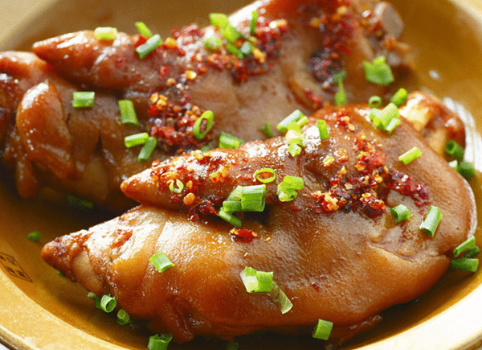
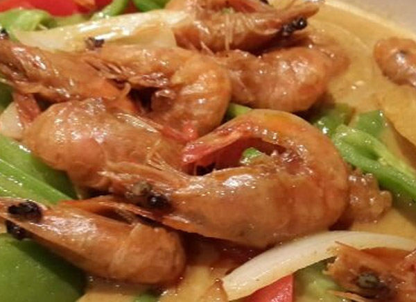
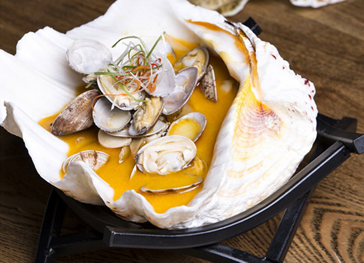
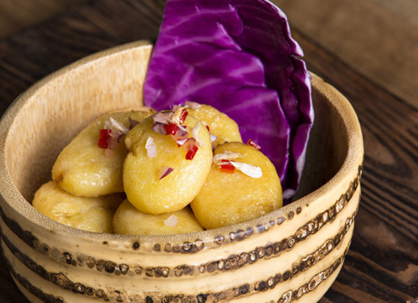
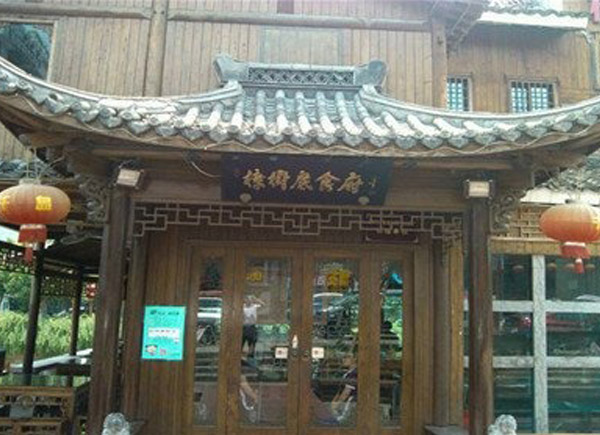
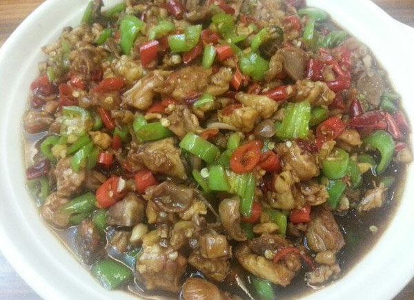
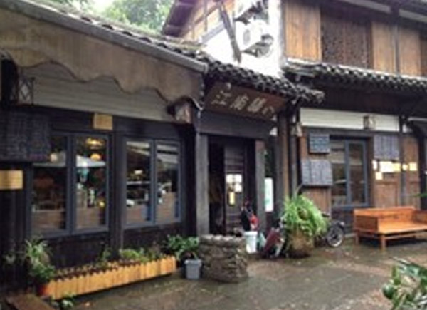
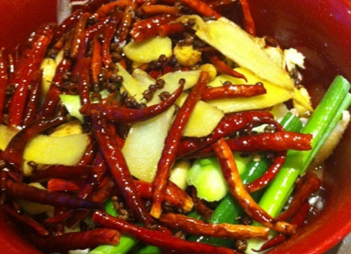
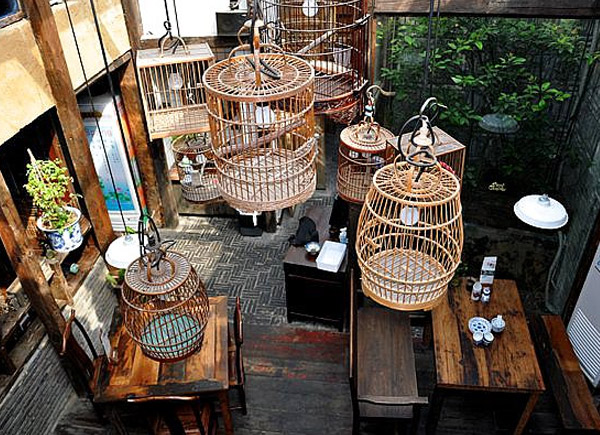
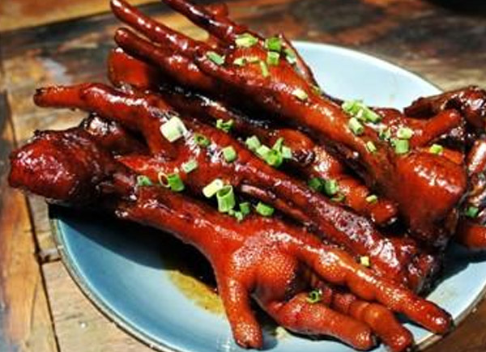

运河上的“运味”
生活在杭州，我们和运河相互依偎，是长长久久几辈子的事情。如今，运河申遗成功。赶快用脚丈量运河历史，亲口品尝运河美味。今天，悠先君带你去哪儿逛逛，你不妨试一试“走运河”、“吃美食”。
庭院的运味
杭州桥西直街有一大批清末民初风格的里弄街巷和历史建筑，这里的房子，有点类似西式联排，一排房子，几户人家连在一起，都是简约的砖木结构，让人能够想象起旧时河边人家的生活意趣，别有一番杭州老底子的味道。沿着桥直街一直逛，过了中国刀剪剑博物馆，便是院子餐厅了。餐厅闹中取静，门前摆放了许多绿色植物，一道院门，一脚踏进，让人有一种走进朋友家做客的错觉。是一方安宁地。因为餐厅老板自己就是设计师，折腾出来的空间有木有砖，又混搭现代装饰，自然很有腔调。

院子里的猪蹄

俗话说：吃啥补啥。妈妈再也不担心我剁手了。这道菜取得创意十足，绝对的吸引眼球，而且非常有场景感，可以想象到乡村每家每户养着猪狗鸡鸭，在院子里的美好日子。菜分为冷艳版和热情版，据说，热情版是餐厅厨师向衢州菜借鉴了做法，带点辣，虽然是荤菜，但做得又爽口又开胃，同时，这道菜还拿下了“运河十大名菜”的美誉。
咖哩皇焗大虾

在菜单上的位置是 “非点不可”，虾用的是壳薄肉厚的明虾，然后将细腻醇厚的咖喱酱浇在虾上，把锅盖严实了，让热气把食物焖熟，同时“逼”出咖喱的香浓美味。经过一段不算短的时间，开锅，这时，整道菜色泽金红，配以青椒红椒，显得色彩丰盈。可以搭配烤脆了的三角形吐司或是白米饭，伴着咖喱酱，香鲜浓郁，比一般的泰国菜餐厅做的咖喱要好吃得多。
地址：桥西直街64-73号(近刀剪剑博物馆)
电话：0571-88194788
“时尚跨界”运味
一台上世纪七八十年代的老式缝纫机，一卷陈旧且泛黄的粗线圈，还有各种线轴和缝纫机改造的卡座，以及等位处的6台电视剧轮番播放维多利亚的秘密的走秀视频。这就是宝贝蛋餐厅。最畅销的品种不叫招牌菜，而被称之为“爆款”。上酱肥牛配土豆泥作为宝贝蛋餐厅的第一特色名菜，浓郁香滑，口感细腻的土豆泥，配上汇聚9种而成酱汁，热腾腾地上桌。肥牛片全生下锅，汁水四溅，全桌的视线就都集中到这道菜上来了。哈根达斯每个球只卖18元，是全杭州最便宜的。而且，连“感冒通”居然都上了菜单——要是女朋友有点感冒症状，就点这个，肯定比说“多喝水”有情趣多了吧。每一道菜品都那么有特色，简直是要逆天！好吧，无图无真相~咱看图说话！
宝贝蛋土豪：富二代

在这个白富美与高富帅夫妻双双把家还的高冷时代，作为宝贝蛋第一花样美男子，富二代真是大受吃货们的欢迎。好多人有困惑问：为啥子它叫富二代哩！不就一碗花蛤类？宝贝们总会笑而不语。你看嘛，它是不是大花蛤里躺着小花蛤，富二代是不是很形象生动呢？
最找不到重点范儿：欠扁

为何叫欠扁类？为何叫欠扁类？到底为何叫欠扁类！！？？这不就是土豆嘛，到底跟欠扁哪里有半毛钱关系喔~~这就是厨师长的过人之处啦，猜！使劲猜！猜中有奖哦~[偷笑 ]
台州路2号运河上街2楼
电话：0517-85862718
无辣不欢的运味
原是建德的一家老店，因门口一株大樟树得名。第一家分店就是开在胜利河美食街上的这家店，少了那棵樟树，却仍然颇有气势。店家是个有心人，菜肴在原有的基础上，融合了周围的口味特点，自成一派，在附近据说是无人不晓。餐厅装潢中式风格，小楼深入河道，因此两面十几桌临河。客人大都聚集在沿河的位子，抬眼便是海草交织的河堤。还能看见水上巴士缓缓开过。墙上自然免不了挂些山水画应景，很是惬意。

店里大部分菜肴原材料，都是从新安江进的，饭店为了保证鱼的品质，特别在千岛湖建立有机鱼塘，从源头保证了原材料的质量。建德菜鲜辣生猛，作为当家菜生炒鸡和炒黑鱼是必点的。生炒鸡厨师的刀功了得，鸡块切的小，盘里的辣椒、生姜和鸡肉傻傻分不清。很是入味。

黑鱼片，肉质鲜嫩，鲜中带辣，一锅下肚满身大汗，好不痛快。各种生炒，突出一个鲜。让人吃了还想吃，根本停不下来！如果你喜欢吃农家菜，又喜欢吃辣，那就一定要来樟树底尝一尝了。各种麻，各种辣，变着法儿地挑动你的味蕾，让你筷子停不下来。
地址：胜利河美食街霞湾巷294号
电话：88331550
“忆江南”运味
“忆江南，最忆是杭州”江南驿是一家以私房菜为主的餐厅。在杭州名气也是响当当的，店内装修也可以说是别具一格，木制的桌椅木窗，外面装修还有里面的摆设都是向着古色古香的路线走的，不愧为运河边的历史街带着禅香。

椒麻鸡招牌菜用店家的话说镇店之宝，鸡肉滑嫩入口香麻，汤汁鲜麻，里面有一小只鸡、大葱、红椒、生姜和花椒，确实是值得推荐的好菜。

还有椒盐菠菜，菠菜稍稍焯水了一下，叶子都是绿绿的，色泽很漂亮，用椒盐和果仁拌一下，很爽口。
地址：大兜路142号
电话：88250808
怀旧&妈妈的运味
餐厅把美食、怀旧和妈妈的味道做了个连结，门口的两个大缸很招眼，室内装修也挺另类，木柱、石板、土灶……感觉就是农家。瓦片垒了墙，竹篾做了灯罩。古老样式的座钟和糖罐子，也从奶奶家的五斗橱上移了过来，摆在了墙头搁架上。菜单用的是以前包糖包药材包葱油饼的牛皮纸，自然的颜色和手感，菜名取得倒是有趣，居然有“四个鸡和一群鱼虾”这样的分类。“太婆虾”还分了男版和女版。主打怀旧灶丰年间算是较早的先行者之一。

大锅里滚着的猪肉，鸡爪，萝卜，无一不淹没在氤氲的香气十足的蒸汽里。汤汁浓厚稠密，亮晶晶的挂在食材上。对于从小习惯酱油的江浙一带生人，看到这样的画面绝对口水直流。“红烧鸡爪”，大约煮的时间够久，鸡爪酥烂，酱香味融入鸡皮的胶质，鸡肉的纤维，以及筋头巴脑的方方面面，浑然天成，让人欲罢不能。

如果你喜欢那种旧旧的味道，古朴的装修风格，不妨来灶丰年间运河店。贴心提示这里车位很多，不用担心吃饭没有车位。
地址：小河路488号运河天地14号楼
电话：87834001